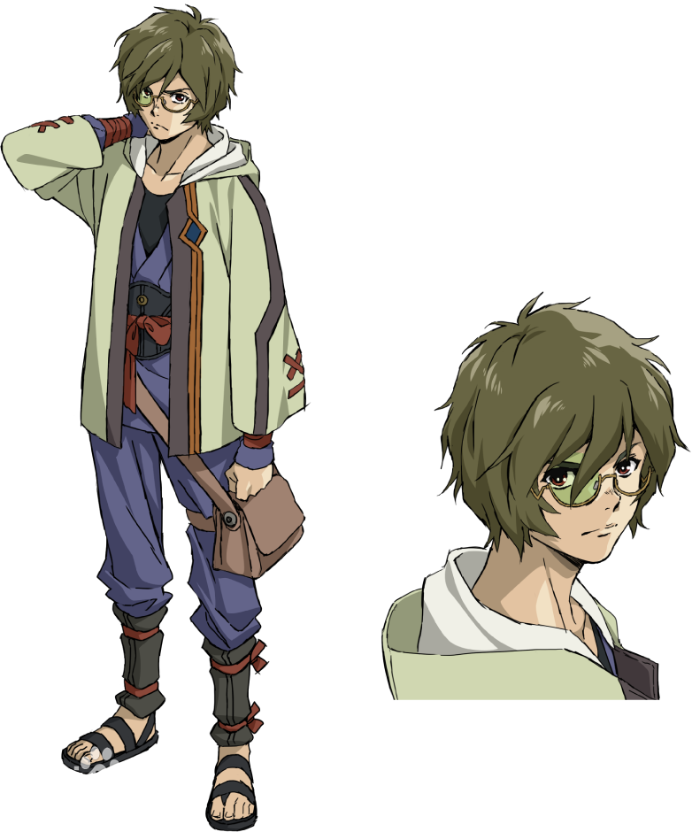
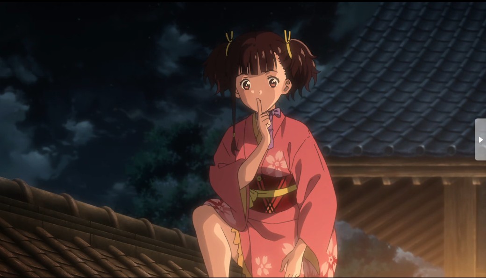
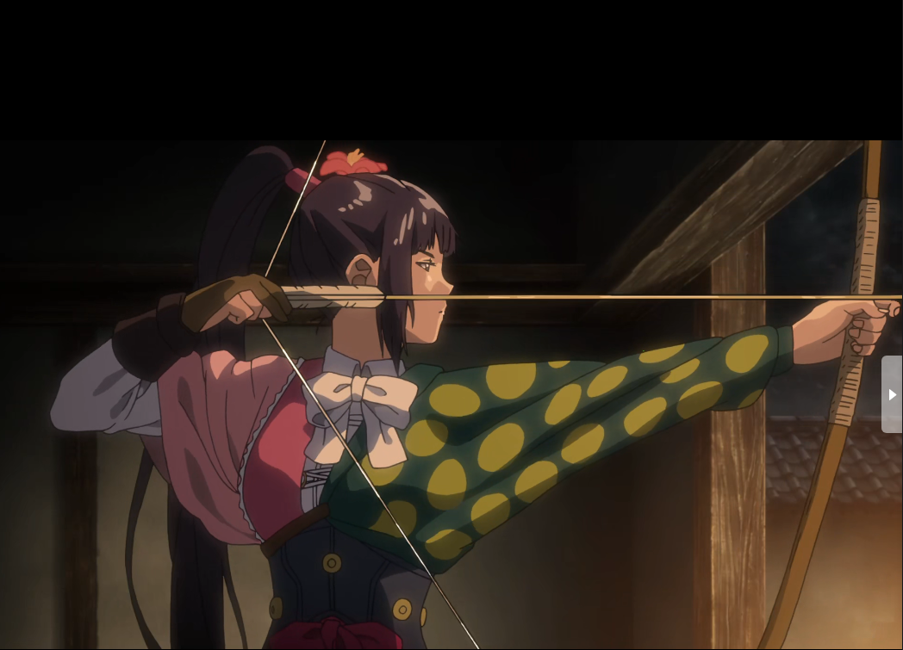
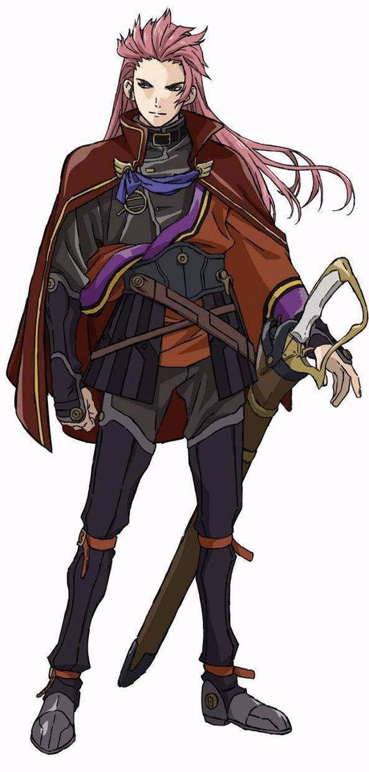
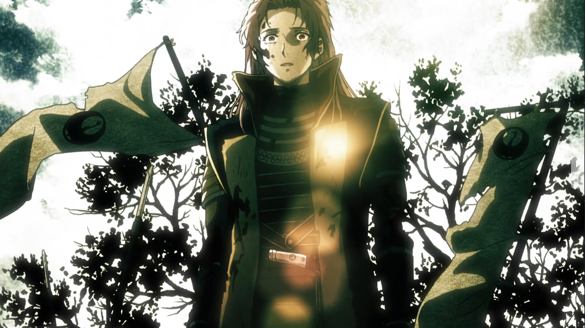

角色介绍：末日下的人性光辉
生驹:本是一名工匠学徒，被卡巴内袭击后靠某种手段免除了病毒对意识的侵蚀，并获得了足以对抗卡巴内的力量。

无名（穗积）:怀着悲惨的童年经历，并因此具有强烈的感恩之心，但在理念发生矛盾时也能坚定地迈出自己的脚步。

菖蒲:被卡巴内攻占郡的郡主，登上甲铁城号后寻找生存下去的方法，等待着回到家乡的那一天。

美马:身为强大军队的总将，或许和穗积存在着某种关系？因对世界的理念不合成为生驹的敌人.
 